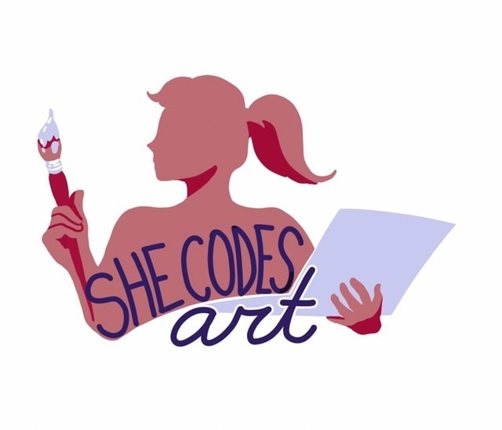

-
Female Coder
I'm learning how to code, and as a cis woman, I know that I am a minority in this field. But there are people working to make things more diverse, and one of them is She Codes Art. They're a non profit that teaches computer science to underrepresented minorities and they joined efforts with Mantra and Co to produce computer science inspired jewelry. It's pretty neat.
Click the image to know more.
-
Psychologist

I am a psychology graduate from the University of Brasília. And even without making a career out of it, this will always be a <lovely> part of me. About this topic I'd like to add that mental health is extremely important, and despite all our efforts in education and how far we've come, mental illness is still very stigmatized.
To deal with this problem specifically in the tech environment, the OSMI was founded in 2013. They provide resources for both employer and employee.
Click here to know more.
-
24601

Who Am I?
Just a little joke for you musical lovers out there.